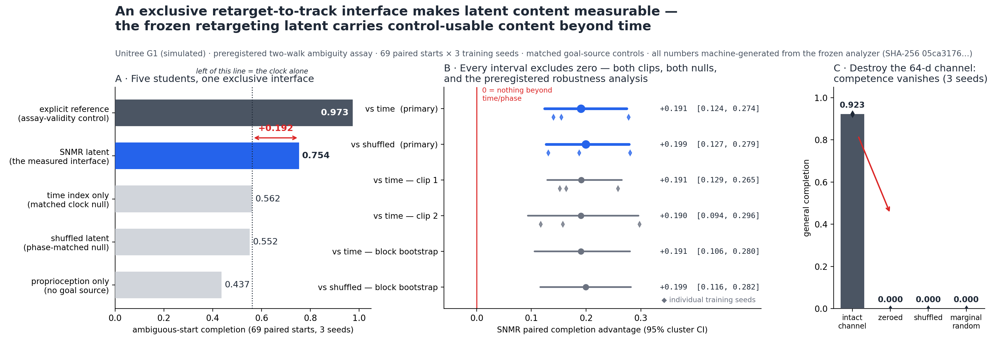

A frozen 64-d retarget-to-track command latent on Unitree G1, measured with an exclusivity contract, matched nulls, a ceiling control, and causal channel destruction. Verdict: +0.191 [0.124, 0.274] of ambiguity-resolving completion beyond a matched clock — content no capability score could attribute, erased to 0.000 when the channel is destroyed.
2025–26 humanoid systems compress human motion into learned command interfaces — then describe those interfaces in words. The evidence behind the words is a t-SNE plot at best. A tracking score cannot tell you why the robot tracked: because the command carried the motion — or because the command is a legible clock and the clip was memorized.
"…leaving the latent to capture mainly ambiguity and multimodality under sparse goals."
"…captures the inherent ambiguity in the mapping from observations to actions."
"…an objective-centric, explainable, and smooth latent representation."
We give these assertions their first controlled measurement — matched nulls, ceiling control, causal destruction, preregistered gates.
An exclusivity contract guarantees the reference reaches the actor only through the 64-d channel (a causal leak detector caught and repaired the one violation — DEFECT-2). Five students train under an identical frozen recipe; only the channel's content differs. Evaluated on 69 reference-only paired starts where the present matches but the futures diverge — a command encoding only progress-through-clip cannot pick the right future.
Ambiguity completion, frozen three-seed aggregate. The dashed amber line in your head sits at 0.562 — anything below it is explainable by the clock alone. The latent clears it by +0.192.
Paired per-cluster effects with hierarchical 95% CIs; the preregistered temporal-block bootstrap (12 blocks, 10,000 replicates) closes the autocorrelation door. All displayed numbers are machine-generated from the frozen analyzer — SHA-256 05ca3176… is stamped into the paper's macros.
Per-seed effects vs time: +0.154 / +0.278 / +0.140 — positive at every training seed, on each clip.

Zero it, shuffle it, or replace it with marginal-random samples: general completion collapses from 0.923 to exactly 0.000 — at all three seeds, in all three destruction modes. The interface is not decorative telemetry; every bit of competence flows through it.
Frozen students → ONNX with a 95%-range safety envelope → driven by the actual Holosoma inference process over the loopback DDS interface into CPU MuJoCo. Candidates picked by a recorded median-completion rule, never visually. Tracking survives the engine hop: 0.17–0.23 rad unassisted joint RMSE, matching the frozen GPU-eval values. The deployment configuration passes the three-repeat safety-handoff gate 3/3. All in simulation — sim-to-real remains unvalidated and unclaimed.
Full campaign with hashes: docs/SIM2SIM_VALIDATION_2026-08-12.md · hard-gated path to hardware in docs/REAL_WORLD_DEPLOYMENT_PLAN.md — not cleared for hardware; stages 4–7 remain.
Verified against primary sources, August 2026. Capability systems are complementary — this row-by-row contrast is about one question only: what evidence exists for what the command interface actually carries?
| System | Command interface | Claim about content | Evidence |
|---|---|---|---|
| ULTRA 2603.03279 | 64-d latent distilled from tracker (G1) | "captures mainly ambiguity and multimodality" | t-SNE + KMeans |
| UniTracker RA-L 2026 | CVAE global motion latent | "captures the inherent ambiguity" | none |
| BFM-Zero ICLR 2026 | Forward-Backward shared latent | "explainable and smooth" | asserted |
| RoboGhost ICLR 2026 | language-grounded motion latents | latents as first-class conditioning | outcome ablation only |
| HANDOFF 2606.06493 | compact explicit task-space | "intuitive, general, modular, expressive" | designed, not measured |
| GMT / SONIC / Humanoid-GPT | explicit references / token space | scale ⇒ generality | tracking scores |
| SNMR / E70 (this work) | exclusive 64-d retarget-to-track latent (G1) | measured: control-usable content beyond time | matched nulls + ceiling + destruction + prereg CIs |
The honest capability line: our explicit student reaches 0.923 vs its teacher's 0.917 — teacher parity through a production interface, deploy-qualified in sim2sim. No SOTA claim; the contribution is the instrument, and the instrument is what none of the systems above have.
Every closed line is preregistered, logged, and kept. Three of our own favored claims died by our own gates — that is why the one that survived is believable.
"The latent's 0.656 means deployable goal content." The pre-specified clock control (E63) reached 0.754 with frame-index sinusoids — our third favored result retired by our own controls. The clock became the published null model.
DEFECT-2: an observation-ordering leak let the decoder see the reference inside "proprio". Red flag: a 90pp gap between arms with identical goal information. Causal blanking probe confirmed; post-fix rerun moved results in both directions and overturned a logged negative.
"Latent beside explicit helps." E36: −10pp (mechanism independently replicated by UniTracker's ablation). E52 v4 three-seed replication of the additive claim: paired deltas straddle zero. The explicit command saturates the goal channel on these clips.
"One aperiodic clip can break the time confound." E66: every student including the explicit positive control collapsed to 0.000 — invalid assay by its own gate; forced the two-trajectory ambiguity design that E70 used.
E70 (closed): the frozen latent carries control-usable content beyond absolute time at ambiguous starts — +0.191 [0.124, 0.274] vs time, +0.199 [0.127, 0.279] vs shuffle, positive per clip and per seed, destruction to 0.000. Scope: two LAFAN1 walks, simulated G1, frozen SNMR endpoint, this controller class.
Fixed probe, variable subject: any retarget-to-track stack with a command bottleneck plugs in. The reported scalar is the Content-over-Null Margin (CNM) — the paired advantage of the real command over its strongest matched null. This page documents its founding measurement: CNM = +0.191 [0.124, 0.274].
Exclusivity contract, ambiguity-pair recipe, null battery, destruction battery, fail-closed hierarchical analysis — all built, hash-stamped, and closed positive.
Calibrated noise titration of the command channel — eval-only, zero frozen-code changes. A graded dose–response is what separates an instrument from a demo.
Students trained on PCA-k compressions of the explicit reference: channels whose content is known by construction. Assay-vs-k monotonicity = classic instrument validation.
The unchanged assay applied to an external latent, plus the contract spec, prereg template, and one-page assay card — the standalone benchmark release.